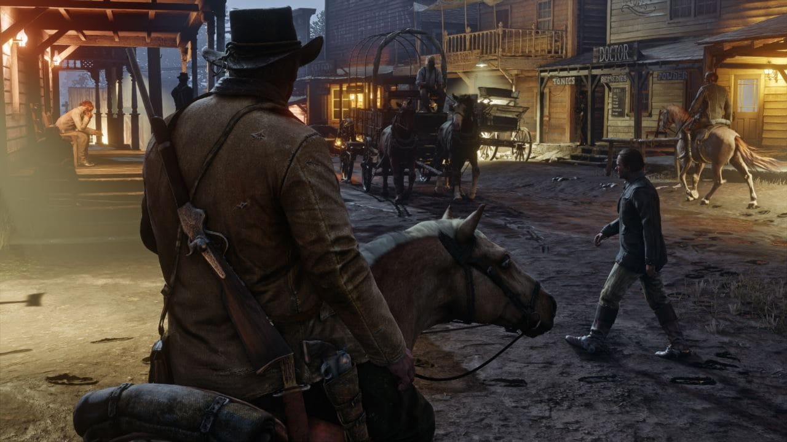

"Oh Jesus Christ, what have you done?" ThomasChen978 wants to know why a dozen bodies and a couple horse corpses are piled onto the train tracks bordering the early industrial town and New Orleans stand-in St. Denis. "You just murdered half the village." "No," I reply, "That's us. This is us. These are our bodies." We're on round two of growing the recursive corpse pile. My posse got the idea to jump in front of the train after a few rounds of Lasso Your Friends And Toss Them Into The Sea with a couple friendly strangers. Red Dead Redemption 2, like GTA 5, has its own bowling minigame, we explain to Chen in a roundabout way, his horror inverting into blissful awareness. Die in Red Dead Redemption 2's shared open world and you'll respawn fast enough to carry your own corpse around. The guy lines up with us. We must make it bigger. As the train comes around again, another posse tries to take us out. Chen defends us, but doesn't make it back to the tracks. He falls a few paces away, screaming. A true warrior's death. Red Dead Redemption 2 can be the biggest, dumbest videogame ball pit for impulsive children, a harrowing story about the forced dissolution of community, or simply a serene and contemplative hiking simulator. It's just about whatever you need it to be, and good at it too.
Red Dead Redemption 2's story mode follows the dying days of the wild west. The spreading industrial world encroaches on Arthur Morgan's small band of outlaws and social underdogs, an imperfect but loyal, loving, and self-sustaining community. Capitalism is reducing humans to their value as resources. Indigenous Americans are driven from the plains to make way for 'civilization' and commerce. Forests are brought down for lumber, the hills gutted for coal, and Morgan's chosen family is caught in the middle of it all, forced to run, assimilate, or respond with violent protest. They do all three. This is Rockstar's most serious drama yet, and it's really, really long. The story 'ends' after 40 to 50 hours if you're rushing, and then continues for another 10 to 15. Red Dead 2's main story missions are stubbornly typical Rockstar fare: ride to a destination talking all the while, do a tightly scripted albeit amusing thing, ride and chat to a final destination to finish up.
Missions are often thrilling action sequences or hypnotically mundane portraits of ranch labor and trade, peppered with cutscenes, long winded bespoke animations, and excellent performances. They're just frustratingly rigid, to the point where it feels like I'm following stage directions rather than roleplaying the life of a vagabond in the old west. Step out of line in these missions and it's a failstate. In stark opposition to Red Dead Online, there's little in them that encourage players to think for themselves, each designed to serve the story foremost. The RDR2 show is a great one at least, luxuriating in the slow pace of life in the old west. It's not all life-and-death dramatics; my favorite missions involve shoveling shit, getting drunk with a friend, the resolution of old romance, and a hot air balloon ride. Working through the more rote, stringent tasks is worthwhile in the end anyway, bolstered by exceptional, ambient world-building and characterization. Side missions, minigames, small activities, and random world events—whether hunting down legendary gunslingers, catching a play, or stumbling across a woman stuck under a horse—all inform Arthur's character and the setting in subtle, enriching ways.
Nested in the third act of a fully animated and voiced theatrical performance, something like 10 minutes in, it's possible to press the react button after a performer does a bit involving a telephone. Arthur will shout, "The hell with the telephone!" It's an optional activity, a long one, and reacting in that short window is a choice. I have to imagine most players will miss it, but it's there instead of Canned Response 1 through 3, because it's something Arthur would say, a grumpy goofball righteously set in his ways. God damn is it sad. An apocalypse that led to this. He'll write whole, actual diary entries about the 50 hour campaign, sketching memorable scenery and reflecting on the state of affairs of his chosen family, people he once knew, oscillating between hope and despair as his fortunes change. It's entirely optional reading, but a refreshingly intimate take on a traditionally masculine figure who harbors as many doubts and hopes as the next person. He'll sing to himself on lonesome rides and decry his aging body in the mirror. He'll have a rambling conversation with the horse-pinned woman as he gives her a ride to town, the two commenting on the troubles of working for rich, ungrateful men as a growing necessity. I feel it all. Hillbillies might hold him up after making camp, a couple might attempt to rob him after inviting him over for dinner, a man with a snakebite might come stumbling out of the woods asking him to suck the poison out. These random encounters depict the brutal life on the fading frontier, as nature pushes back against the interlopers who seek to transform it. Arthur is a perfect vessel to see it through.
Red Dead Redemption 2's stark, slow depiction of America's fading frontier is a monumental work straining against stubborn mission design and stability problems.
Comment Here